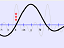
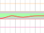

🎵
Please, choose a lesson!
Tunator 1.0 (01/2019)
438
439
440
441
442
443
444
C notation
Bb notation
A notation
F notation
Eb notation
C8 notation
==
Bb sound
A sound
F sound
Eb sound
C8 sound
--
Hz
speak name


song
melody.mp3
melody.ogg
c_major_scale.wav
Aennchen_von_Tharau.mp3
Tschaikowsky_5_2.mp3
score
rhythm
intonation
audio
sampling:
1
n
all
noise
loop
timeline:
10
15
20
25
30
40
50
100
200
smoothed
dynamic
shading
simple
precise
∿
--
++
-
+
straight
vibrato
compare (easy)
compare (medium)
compare (difficult)
compare (difficult -8)
compare (difficult +8)
compare (hard)
compare (hard -8)
compare (hard +8)
drifting
24 semitones
48 semitones
major scale
major scale slow
major scale slow 1 octave
tune: Herbstwind
tune: Amen
random: 1 octave, 40%
random: 1 octave, 90%
sine
triangle
sawtooth
square
custom
I
I [± 40 ct.]
I [± 30 ct.]
I [± 20 ct.]
I +10 ct.
I +20 ct.
I +30 ct.
I +50 ct.
I +75 ct.
i +ii
I +II
i +iii
1 +3_
I +III
1 +3
I -III
I +IV
I +V
I -V
-----------
+iii
-iii
+III
-III
+V
-V
XII
-XII
+iii +V
-iii +III
-III -V
+III +V
-III +iii
-iii -V
-----------
I +vi
I +VI
I +vii
I +VII
I +iii +V
I +III +V
1 +3 +5
I +III +V +vii
I +III +V +VII
≋
⊥
...
≈
⇓
⇑
?
rate:
loop:
detect:
minRMS:
microGain:
adapt height
osc. harmonics 1-8 level
osc. harmonics 1-8 phase